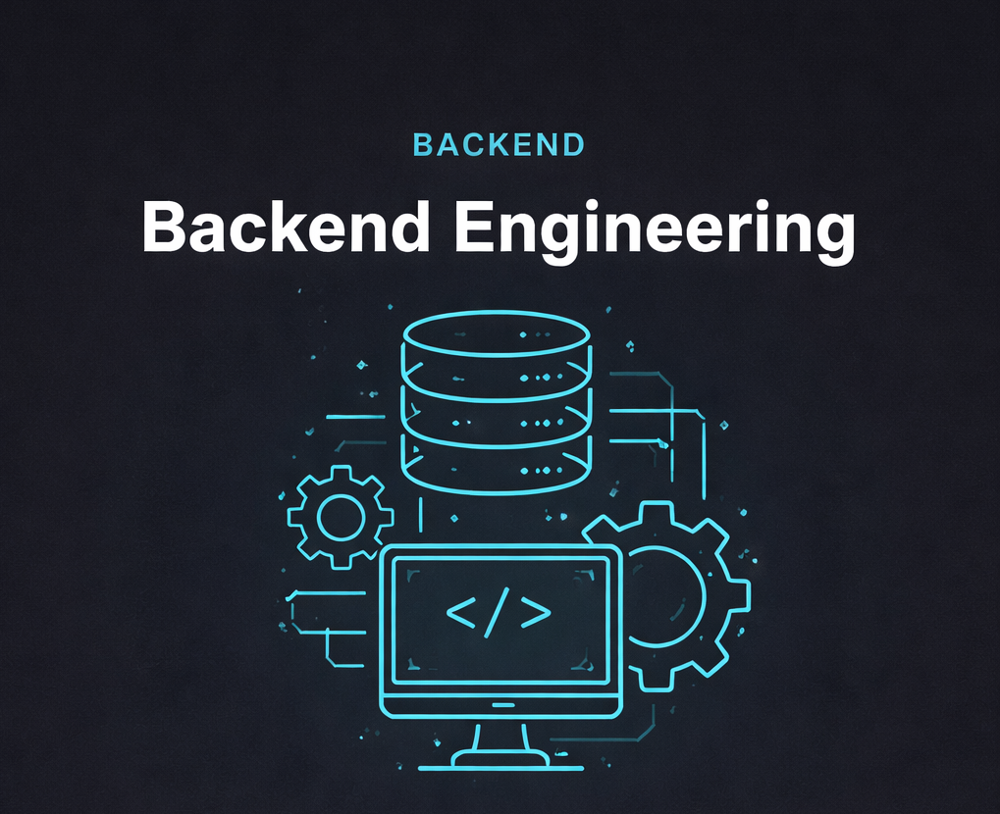
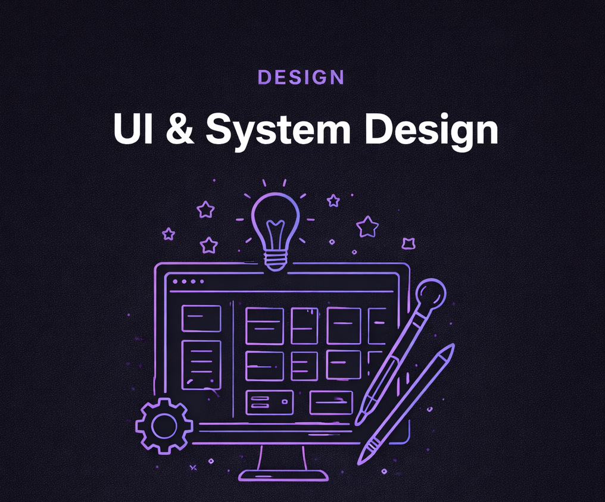
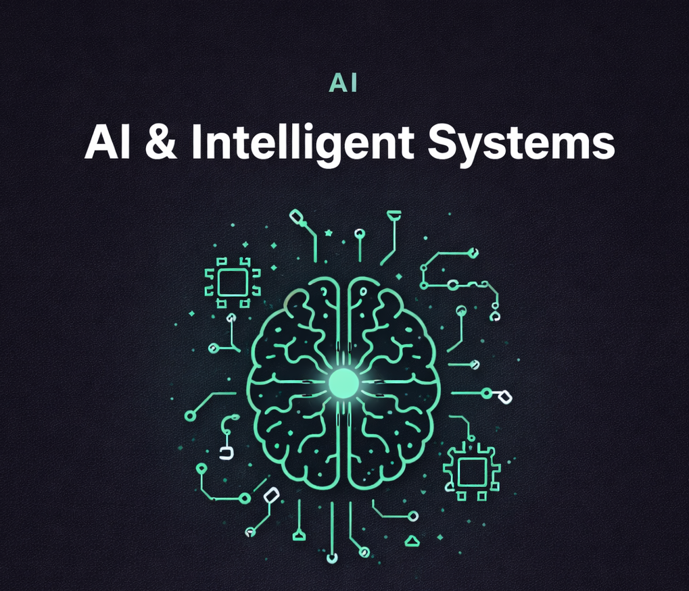

I have extensive experience in backend development, building robust
and scalable server-side applications. I've worked with Node.js and
Express to design RESTful APIs, and I'm familiar with Java and Spring
Boot for enterprise-level services. I've configured and optimized
databases such as MySQL, PostgreSQL, and MongoDB, and implemented
authentication with JWT and OAuth2. I also use Docker to containerize
applications and Git/GitHub for version control. My focus is on clean,
maintainable code, efficient data handling, and secure server logic.

I have hands-on experience in UI/UX and interface design, creating
intuitive and visually engaging user experiences. I design layouts and
prototypes using Figma and Adobe XD, carefully considering user flows,
accessibility, and responsive design principles. I use CSS3, Flexbox,
Grid, and modern design systems to implement clean and scalable
styles. I collaborate closely with developers to turn mockups into
functional interfaces and ensure polished, user-focused results.

I have practical experience in Artificial Intelligence and Machine
Learning, applying models to real-world problems. I've built and
trained models using Python, scikit-learn, and TensorFlow/Keras,
working with datasets for classification and prediction tasks. I'm
familiar with natural language processing (NLP) techniques and
experiment with frameworks like PyTorch for deeper model development.
I also integrate AI workflows using Jupyter Notebooks, perform data
preprocessing with Pandas, and use NumPy and Matplotlib for analysis
and visualization.